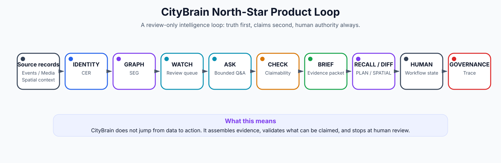
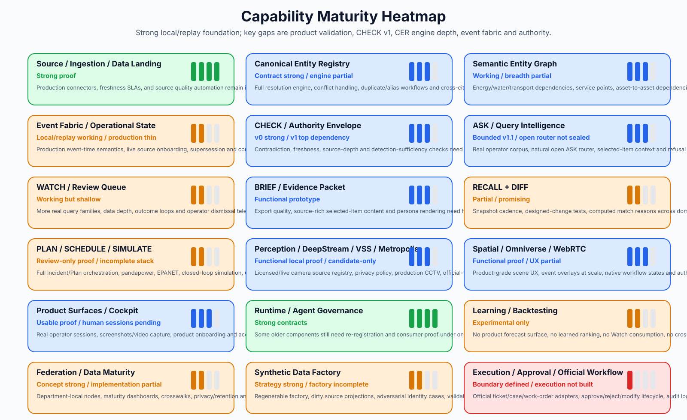
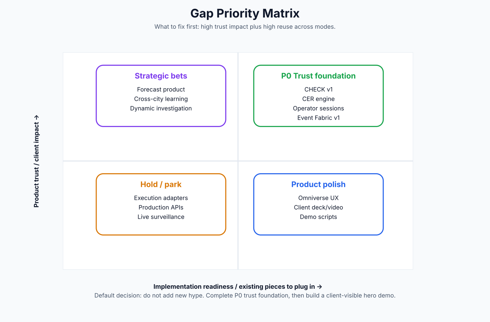
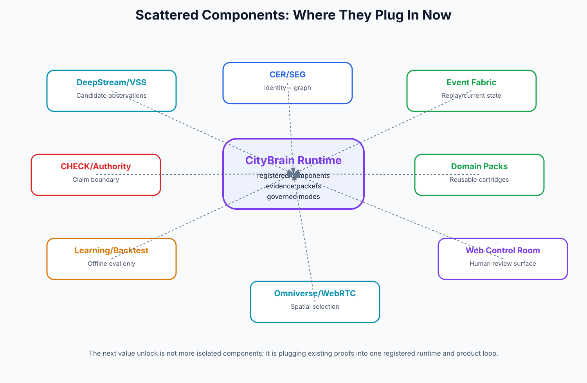
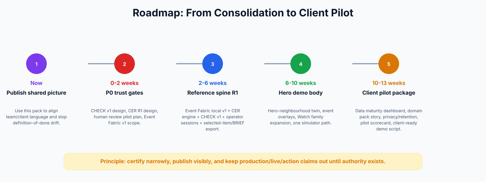

Start here
Key diagrams





Category docs
- 00_MASTER_INDEX.md
- 01_EXECUTIVE_PICTURE.md
- 02_PRODUCT_MANAGEMENT_DOSSIER.md
- 03_ARCHITECTURE_BLUEPRINT.md
- 04_CAPABILITY_MATURITY_MAP.md
- 05_GAPS_PARKED_WORK_REGISTER.md
- 06_COMPONENT_PLUGIN_MAP.md
- 07_ROADMAP_AND_NEXT_MOVES.md
- 08_CLIENT_STORY_AND_DEMO_SCRIPT.md
- 09_SOURCE_AND_EVIDENCE_CROSSWALK.md
- 10_TECHNICAL_GLOSSARY.md